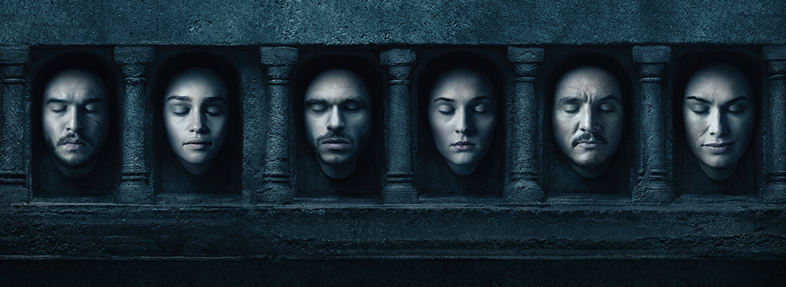

Pesma leda i vatre
Pesma leda i vatre (engl. A Song of Ice and Fire, ASoIaF) je nedovršeni serijal romana epske fantastike amerièkog autora Džordža R. R. Martina. Martin je zapoèeo pisanje romana 1991. godine, a prvi roman je objavljen 1996. Prvobitno je planiran kao trilogija, ali se serijal trenutno sastoji od 5 knjiga sa još 2 koje su planirane. Kao dodatak ima još tri novela, a planirane su još nekoliko. Sinopis novela je izveden iz glavnog sinopisa serijala.
Prièa Pesme leda i vatre se dogaða u izmišljenom svetu, uglavnom na kontinentu zvanom Vesteros, ali takoðe i na velikoj kopnenoj masi na istoku znanom kao Esos. Rasa veæine likova je ljudska, ali kako serijal odmièe druge rase se dodaju, kao na primer Tuðini, nadljuska hladna rasa sa Severa za koju se je verovalo da je istrebljena, i zmajevi koji bljuju vatru sa Istoka. Radnja se dešava sa taèke gledišta iz treæeg lica sa pregršt likova (31 na kraju pete knjige).
Glavna prièa ima tri zasebna toka, ali kako radnja odmièe oni se sve više prepliæu. Prvi tok je dinastièki graðanski rat za kontrolu nad Vesterosom izmeðu nekoliko porodica. Druga je rastuæa pretnja od Tuðina, koji se nalaze iza velikog ledenog zida na severnoj granici Vesterosa. Treæa je ambicija Deneris Targarjen, proterane æerke kralja ubijenog 15 godina ranije u drugom graðanskom ratu, da se vrati u Vesteros i povrati presto.
Serijal je preveden u više od 20 jezika. Èetvrta i peta knjiga je zauzela vrh liste bestselera Njujork Tajmsa 2005. i 2011. godine. Ukupno prodato je više od 15 miliona primeraka knjiga širom sveta. Jedna od dodatnih novela je dobila Hugo Award u kategoriji nauène fantastike. Serijal je podloga mnogim drugim delima ukljuèujuæi i televizijsku seriju HBO-a Igra prestola, serijal stripova, kartaškim igrama, tablerskim igrama i dvema video igrama.
Radnja
Pesma leda i vatre prati tri glavne radnje, koje su podeljene geografski i likovima. Svi dogaðaji su isprièani iz perspektive lika koji ih posmatra. Smeštena u Sedam kraljevstva na izmišljenom kontinentu zvanom Vesteros, glavna radnja opisuje mnoge borbe za Gvozdeni presto, posle kraljeve smrti u prvoj knjizi. Druga radnja se dešava na krajnjoj severnoj granici Vesterosa, na ogromnom zidu, sazidanom od leda i šljunka, koji štiti kraljevstvo od mitskih stvorenja severno od njega. Treæa radnja se dešava u ogromnom istoènom kontinetnu zvanom Esos i prati avanture æerke kralja i prethodne vladajuæe dinastije, koja želi da povrati presto.
Igra prestola zapoèinje vladavinom Roberta Barateona na Vesterosu. Posle njegove smrti, tokom prve knjige, njegov sin Džofri preuzima Gvozdeni presto uz podršku majèine snažne porodice, Kuæe Lanistera. Kada Lord Edard Stark, Robertova desnica, otriva da Džofri i njegovi brat i sestra nisu u stvari deca Roberta, Robertovi mlaði brat Stanis i Renli zapoèinju borbu za presto. U meðuvremenu, nekoliko regija se otcepljuje od kraljevstva: Edardov najstariji sin Rob je proglašen za Kralja na Severu i Bejlon Grejdžoj za vladara Gvozdenih ostrva. Ovaj takozvani rat Pet kraljeva je u punom jeku do polovine druge knjige (Sudar kraljeva) sa još nekoliko ljudi koji se pridružuju borbi za vlast.
U meðuvremenu, zima stiže na Vesteros sa severa. Ogroman zid od leda i šljunka je konstruisan na krajnjem severu pre više hiljada godina, sa ciljem da èuva granicu od severnih pretnji poput Tuðina, mistiènih stvorenja koji nisu viðeni pre više od 8000 godina. Zakleto bratstvo Noæne straže, koja brani zid, uglavnom se je sukobljavalo sa ljudskim divljacima koji živa iza zida, sve dok se nisu opet pojavili prvi Tuðini na poèetku knjige Igre prestola. Prièa Noæne straže se uglavnom prièa iz perspektive Džona Snežnog, kopileta Eda Starka, koji se uzdiže kroz rangove Straže i saznaje za pravu pretnju sa severa. Do kraja treæe knjige Oluje maèeva, radnja se sve više spaja sa graðanskim ratom na jugu. Stanis, jedini preživeli od prvobitnih petoro zaraæenih kraljeva, dolazi na Zid da ga brani od invazije Divljaka. U petoj knjizi, Ples sa zmajevima, Džofrijev mlaði brat Tomen vlada Gvozdenim prestolom, sa njegovom majkom, a kasnije i ujakom koji kasnije postaje i regent, dok se zima polako bribližava glavnom gradu.
Prièa Daneris Targerijen, zadnjeg pripadnika Kuæe Targerijena i još jednog borca za presto, je uglavnom zasebna sve dok joj se više glavnih likova ne priduže u Plesu sa zmajevima. Živeæi u egzilu na kontinentu Esosu, Danerisine avanture prikazuju njene rastuæe sposobnosti vladara. Njeno uzidzanje prati roðenje tri zmaja, stvorenja za koje se je mislilo da su istrebljeni. Zbog porodiènog grba ova stvorenja imaju samo simbolièno znaèenje sve dok dovoljno ne porastu i upotrebe se taktièki za zauzimanje Gvozdenog prestola.
Knjige

Serijal knjiga Pesma leda i vatre sastoji se od 7 knjiga:
- Igra prestola
- Sudar kraljeva
- Oluja maèeva
- Gozba za vrane
- Ples sa zmajevima
- Vetrovi zime
- San o proleæu
Serija

Adaptaciju knjiga Pesma leda i vatre radi HBO pod nazivom Igra prestola. Serija je veoma dobro prihvaæena i jedna je od najpiratovanijih tv emisija ikada. Trenutno je prikazano 6 sezona serije, dok se emitovanje 7 sezone planira na leto 2017. godine.
Uvodna tema serije se smatra jednom od najprepoznativljivih u svetu.
SmartSchool 2017.